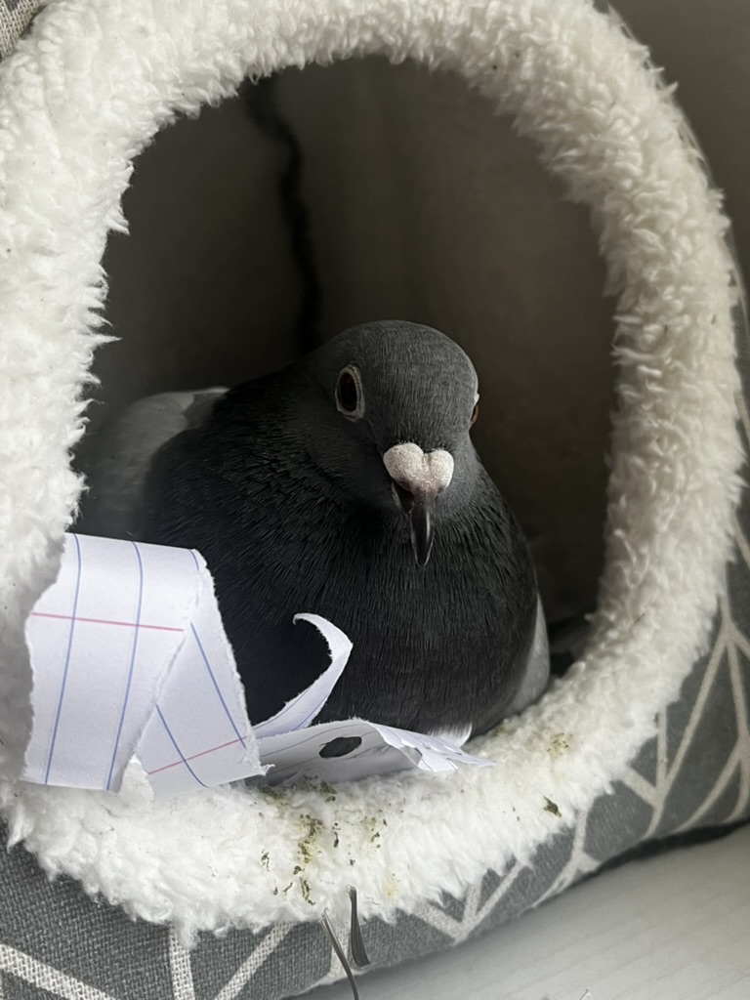

SECOND CHANCE PIGEON RESCUE
A second chance for birds left behind
A second chance for birds left behind

rescue, rehabilitation, and lifelong placement
Second Chance Pigeon Rescue was founded in January, 2026. It is not currently recognized as a 501(3)(c) rescue. Our mission is to take in non-releasable pigeons in the southwest region of Ohio and the surrounding areas and provide veterinary care, treatment, and proper enclosures to our birds so they can one day be placed in a home or sanctuary. Pigeons do not have the luxury of walking into the doctor's office when they're ill or injured. Many shelters that take in cats or dogs do not take in pigeons, and even many bird rescues that may take in parrots or other pet bird species may not take in pigeons. Second Chance Pigeon Rescue aims to fill that void in this part of Ohio.